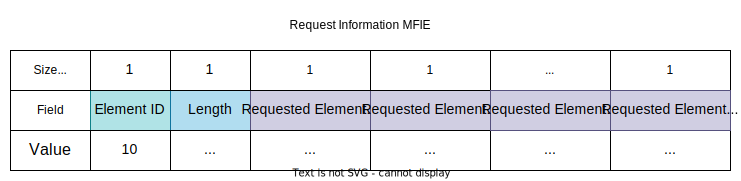

Introduction
Before connecting to a wireless network, a client needs to be aware of its existence and parameters. This can either be achieved in two ways - passive and active scanning.
Passive scanning is when the client goes through all available channels in turn and listens for beacon frames from the APs in the area. The time spent on each channel is defined by the device's driver.
Active scanning is when the client sends probe requests to each channel in turn in order to discover what networks are available on it.
Beacon Frames
Beacon frames are used by APs (and stations in IBSS) in order to announce their presence to the surrounding area and to communicate the parameters of the network. Not only are these frames used by potential clients, but it they also serve the active clients in the network.
Beacon frames are broadcasted periodically at the so-called target beacon transmission time (TBTT). The interval between beacon transmissions is defined in the AP MIB and defaults to 100 time units, or a little over 102 ms (1 TU = 1 kμs = 1 024 μs). However, the AP will need to delay the transmission if the network is busy.
Beacon frames are used by the stations in a network for time synchronisation. A timestamp as well as the expected transmission time of the next beacon are included in every beacon frame. The timestamp is utilised by each station in the so-called Timing Synchronisation Function (TSF).

Following is a table of the possible fields in a beacon frame (the order for optional fields may vary):
| Order | Name | Status | Description |
|---|---|---|---|
| 1 | Timestamp | Mandatory | |
| 2 | Beacon Interval | Mandatory | |
| 3 | Capability Information | Mandatory | |
| 4 | Service Set Identifier (SSID) | Mandatory | |
| 5 | Supported Rates | Mandatory | |
| 6 | Frequency-Hopping (FH) Parameter Set | Optional | Used by legacy FH stations. |
| 7 | DS Parameter Set | Optional | Present within beacon frames with stations with clause 15, 18, and 19 as their provenance. |
| 8 | CF Parameter Set | Optional | Used for PCF and not present in non-notional situations. |
| 9 | IBSS Parameter Set | Optional | Used within an IBSS (duh). |
| 10 | Traffic Indication Map (TIM) | Optional | Present only in beacons with an AP as their provenance. |
| 11 | Country | Optional | |
| 12 | FH Parameters | Optional | Used with legacy FH stations. |
| 13 | FH Pattern Table | Optional | Used with legacy FH stations. |
| 14 | Power Constraint | Optional | Used with 802.11h. |
| 15 | Channel Switch Announcement | Optional | Used with 802.11h. |
| 16 | Quiet | Optional | Used with 802.11h. |
| 17 | IBSS DFS | Optional | Used with 802.11h in an IBSS. |
| 18 | TRC Report | Optional | Used with 802.11h. |
| 19 | ERP Information | Optional | |
| 20 | Extended Supported Rates | Optional | See Supported Rates. |
| 21 | RSN | Optional | |
| 22 | BSS Load | Optional | Used with 802.11e QoS. |
| 23 | EDCA Parameter | Optional | Used with 802.11e QoS when the QoS Capability element is missing. |
| 24 | QoS Capability | Optional | Used with 802.11e QoS when the EDCA Parameter element is missing. |
| 25 - 32, 34 - 36 | Vendor Specific | Optional | |
| 33 | Mobility Domain | Optional | Used with 802.11r Fast BSS Transition. |
| 37 | HT Capabilities | Optional | Used with 802.11n. |
| 38 | HT Operation | Optional | Used with 802.11n. |
| 39 | 20/40 BSS Coexistence | Optional | Used with 802.11n. |
| 40 | Overlapping BSS Scan Parameters | Optional | |
| 41 | Extended Capabilities | Optional | See Capability Information. |
Probe Request Frame
Probe request frames are employed by devices seeking to uncover what networks are present on a certain channel. They are typically sent to the broadcast address of FF:FF:FF:FF:FF:FF using the common CSMA/CA procedure. Once a probe request is sent, the sender station initiates a countdown, typically much shorter than the duration of a beacon interval. When the timer runs out, the device process the probe responses it received.

| Order | Name | Status | Description |
|---|---|---|---|
| 1 | Service Set Identifier (SSID) | Mandatory | |
| 2 | Supported Rates | Mandatory | |
| 3 | Request Information | Optional | |
| 4 | Extended Supported Rates | Optional | See Supported Rates. |
| 5 | Vendor-Specific | Optional | Used by the vendor as seen fit. |
The SSID of a particular network that the device is looking for may be set in the appropriate field. This way, only the devices bearing the desired SSID should response. Otherwise, the SSID element is still present but is empty. In this case, it signifies a wildcard probe and so all available networks should respond.
The rates supported by the device are sent together with the probe request so as to serve as a reference to the AP's response.
The Request Information element is optional and may be used to enquire about a particular information element of a network.

It has an element ID of 10 and its component is a series of 1-byte integers indicating the element IDs of the desired elements. The network should in turn respond with these elements in the Probe Response.
Probe Response Frame
This is the type of frame which serves as a response to a Probe Request. It closely resembles a beacon frame, since they both answer the same more or less the same questions - they give information about the AP (or a station in IBSS) and the network. In fact, here are the differences:
- A beacon frame has a TIM field, whereas a probe response does not.
- A beacon frame may contain a QoS Information element, announcing basic QoS support.
- A probe response will also contain the elements requested in the probe request.
A probe response frame is sent as a unicast frame with the destination address being the MAC address of the station which issued a probe request. The probe response is transmitted at the lowest mutually supported rate by the AP and the soliciting station. Just like any unicast frame, a probe response should be acknowledged by the recipient station.

| Order | Name | Status | Description |
|---|---|---|---|
| 1 | Timestamp | Mandatory | |
| 2 | Beacon Interval | Mandatory | |
| 3 | Capability Information | Mandatory | |
| 4 | Service Set Identifier (SSID) | Mandatory | |
| 5 | Supported Rates | Mandatory | |
| 6 | Frequency-Hopping (FH) Parameter Set | Optional | Used by legacy FH stations. |
| 7 | DS Parameter Set | Optional | Present within beacon frames with stations with clause 15, 18, and 19 as their provenance. |
| 8 | CF Parameter Set | Optional | Used for PCF and not present in non-notional situations. |
| 9 | IBSS Parameter Set | Optional | Used within an IBSS (duh). |
| 10 | Country | Optional | Used with 802.11d and used with 802.11h. |
| 11 | FH Parameters | Optional | Used with legacy FH stations. |
| 12 | FH Pattern Table | Optional | Used with legacy FH stations. |
| 13 | Power Constraint | Optional | Used with 802.11h. |
| 14 | Channel Switch Announcement | Optional | Used with 802.11h. |
| 15 | Quiet | Optional | Used with 802.11h. |
| 16 | IBSS DFS | Optional | Used with 802.11h in an IBSS. |
| 17 | TRC Report | Optional | Used with 802.11h. |
| 18 | ERP Information | Optional | |
| 19 | Extended Supported Rates | Optional | See Supported Rates. |
| 20 | RSN | Optional | |
| 21 | BSS Load | Optional | Used with 802.11e QoS. |
| 22 | EDCA Parameter | Optional | Used with 802.11e QoS when the QoS capability element is missing. |
| 23 | Measurement Pilot Transmission Information | Optional | Used with 802.11k. |
| 24 | Multiple BSSID | Optional | Used with 802.11k. |
| 25 | RRM Enabled Capabilities | Optional | Used with 802.11k. |
| 26 | AP Channel Report | Optional | Used with 802.11k. |
| 27 | BSS Average Access Delay | Optional | Used with 802.11k. |
| 28 - 30 | Reserved | - | |
| 31 | Mobility Domain | Optional | Used with 802.11r. |
| 32 | DSE Registered Location | Optional | Used with 802.11w. |
| 33 | Extended Channel Switch Announcement | Optional | Used with 802.11y. |
| 34 | Supported Regulatory Classes | Optional | Used with 802.11y. |
| 35 | HT Capabilities | Optional | Used with 802.11n. |
| 36 | HT Operation | Optional | Used with 802.11n. |
| 37 | 20/40 BSS Coexistence | Optional | Used with 802.11n. |
| 38 | Overlapping BSS Scan Parameters | Optional | |
| 39 | Extended Capabilities | Optional | See Capability Information. |
| 40 - n | Requested Information Elements | Optional | The information elements requested in the Probe Request. |
| Last | Vendor-Specific | Optional | Follows all other elements. |